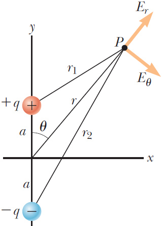
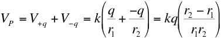
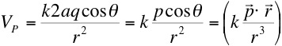

Assuming no azimuthal variation we may write,

When r >> a, then r1, r2 and r are approximately equal and r2- r1 = 2acosθ. Therefore,

"There are three kinds of men. The one that learns by reading.
The few who learn by observation. The rest of them have to pee
on the electric fence for themselves."
Will Rogers
Dr. C. L. Davis
Physics Department
University of Louisville
email: c.l.davis@louisville.edu